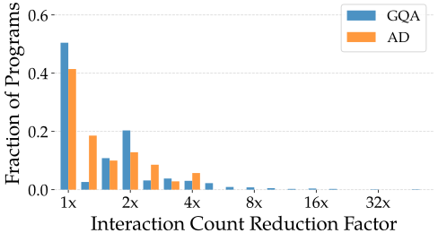
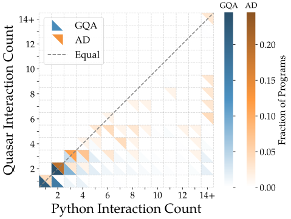
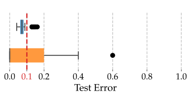
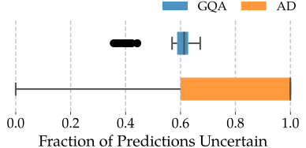
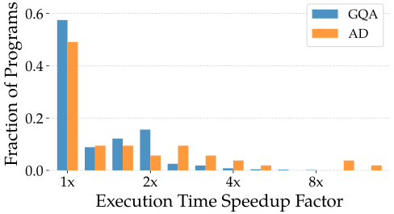
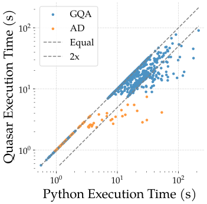

Instead of emitting one tool call per turn, an LLM agent can write a short program that calls tools and subagents from inside loops and conditionals. Many systems take this approach, including CodeAct, Anthropic and OpenAI's Programmatic Tool Calling, Claude Code Ultracode, Recursive Language Models, and DeepMind CaMeL, and it provides accuracy, token efficiency, reproducibility, context management and prompt-injection mitigation, respectively. For example, an agent might use the following code action to summarize a directory of files:
Code actions
context = ""for fn in os.walk(path): data = read_file(fn) context += summary_agent(data)return synthesis_agent(context)
Python is for software development
Today code actions are written in Python because LLMs are fluent in it. But Python was designed for software development, not for orchestrating tools, and there are various desirable features that Python does not support. Three examples:
Approval fatigue
For security, agents often ask the user to approve each tool call (e.g., read_file). So many requests cause approval fatigue: users stop reading them and just click yes.
Batching these approvals, presenting many of them to a user in a single interaction, could reduce this fatigue.
But Python blocks at each call, so approvals can only be requested one at a time.
Subagent mistakes
Subagents return a single answer with no uncertainty quantification, and a wrong intermediate value silently corrupts the result.
Conformal prediction has subagents return a set of candidate answers, which is guaranteed to contain the correct answer at a tunable target rate.
But Python cannot propagate a set of candidate values through the rest of the program, e.g., through an if.
Slow execution
Each subagent call can take many seconds, and so executing many subagents, particularly in a loop, can be very slow.
In many cases, parallelization can be used to run independent calls simultaneously.
But Python runs calls strictly in sequence, even when they are independent.
Quasar1 is for code actions
The key observation is that a code action mixes two kinds of computation. Internal code (loops, string concatenation, return statements, etc.) has no effect on the world. External calls (reading a file, invoking a subagent) do. Python cannot tell them apart; Quasar keeps them separate.
That is enough to make features like these simple to implement: external calls carry an annotation describing their effects, and the interpreter runs internal code under an alternative semantics that tracks those annotations. Quasar programs are executed by confluent rewrite rules, so the interpreter is free to run statements out of order, to resolve a conditional both ways, or to pause and ask—whatever the feature needs.
context = "" for fn in os.walk(path): data = read_file(fn) context += summary_agent(data) return synthesis_agent(context)
internal codeexternal calls
Approval fatigue
External calls declare which resources they touch and whether they require approval.
Internal code runs with batching semantics: execute internally as far as possible, then present every blocked call for approval at once.
Subagent mistakes
External calls return a conformal prediction set rather than a single value.
Internal code runs with set semantics: an if on {True, False} executes both branches and unions the results.
Slow execution
External calls declare their commutativity (reorderability with respect to other calls).
Internal code runs with parallel semantics: every call whose arguments are known is dispatched immediately.
Quasar yields diverse benefits
We evaluate on two existing code-action systems with programs generated by GPT-5: ViperGPT on 1000 visual question-answering tasks from GQA, and the CaMeL secure assistant on all four suites of AgentDojo. Each Python program is compared against its own transpiled Quasar counterpart, which makes exactly the same external calls.
Approval fatigue: Quasar reduces tail* approval count by 2× / 7×
Though only 50% / 57% of tasks have anything to batch, across those that do, user interactions fall by 53% / 44%.


Subagent mistakes: Quasar meets the 10% conformal error target
Thresholds are chosen on a validation split to hit a 10% error target; over 100 random splits the test error is 7.9% / 8.6%. The price of the conformal guarantee is uncertainty: the result set has more than one element on 58% / 84% of tasks.


Slow execution: Quasar improves tail* latency by 4× / 3×
External calls are recorded and replayed so their latency is controlled. On the 49% / 38% of tasks that are parallelizable, running time falls by 37% / 54%.


*P90: median improvement over the tasks above the 90th percentile of approval count or latency.
Scalability: Quasar reduces approvals by 97% and running time by 93% on deep research
The same approach scales to deep research. On a subset of BrowseComp-Plus (~100 documents per question, run through Recursive Language Models with Quasar in place of Python), approvals drop by 97% and running time by 93%, because complex tasks make many more external calls and so leave much more to batch and parallelize.
Quasar is simple, extensible, and transpiled from Python
Raw Quasar looks nothing like Python, and LLMs cannot write it directly. Instead, the LLM writes Python in a subset (function calls, local variables, if and for) that a transpiler converts into Quasar's small functional form: imperative updates inside conditionals and loops become functional conditionals and folds. Any Python library is usable as an external call. Transpiler errors are static, so they can be fed back to the model without running anything.
Quasar preserves task accuracy
Fraction of tasks (%) whose generated program executes without error, and whose output matches the ground truth, on GQA and AgentDojo. Restricting GPT-5 to the transpilable subset (1-turn) leaves accuracy unchanged; feeding transpiler errors back for up to five turns improves it on both benchmarks. A small model (GPT-4.1-nano) that struggles to stay in the subset can be fine-tuned on 900 programs generated by the large model.
| Approach | Execution | Accuracy |
|---|---|---|
| Python, unrestricted | 99.6 / 76.3 | 71.8 / 64.5 |
| Quasar (1-turn) | 97.9 / 82.8 | 71.4 / 63.4 |
| Quasar (5-turn) | 99.5 / 89.2 | 72.3 / 67.7 |
| GPT-4.1-nano, base | 92 | 65 |
| GPT-4.1-nano, fine-tuned | 99 | 71 |
Citation
@inproceedings{mell2026quasar,
title={Quasar: A Programming Language Specialized for {LLM} Code Actions},
author={Stephen Mell and Botong Zhang and David Mell and Shuo Li and Ramya Ramalingam and Nathan Yu and Stephan Zdancewic and Osbert Bastani},
booktitle={Third Conference on Language Modeling},
year={2026},
url={https://openreview.net/forum?id=GsJsZgAoNz}
}